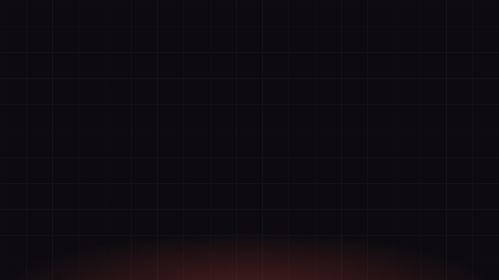

One repo that connects to all my other repos.
Hub and spoke, plus a review at the end of every agent session
The hub
Index of topicsthe agent pulls what's relevant
Repo mapwhat each repo does, its conventions,
how changes and deploys work
Workflowsstep by step, until ready to ship
Agent sessionplans, designs and
runs the verification
Session endsthe agent reviews
the whole session
Unambiguous factadded on its own
Anything elseproposes a new rule
knowledge updated